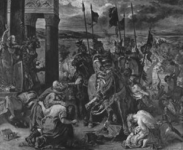

IX
Avrupa Kültürü ve Türkiye
1453’te İstanbul fethedildi ve bir Osmanlı fethinde ne gerekiyorsa bunlar da yerine getirildi. Şehir direndiği için yani “vira” ile teslim olmadığı (vira Slovenik bir kelimedir, inanç demektir, itimat demektir), yani “buyurun girin, biz çıkıyoruz” denmediği için yağmalanması icab eder; bu, ganaîm-i harbiyye hükmüne girer. Fakat ilginç bir şekilde birtakım yazarlar söylemezler, şehir yedi gün değil, sadece üç gün boyunca bu süreçten geçmiştir. Anlaşılan artık devletin başkenti olacak şehrin pek fazla tahribat görmesine, pek fazla fakirleşmesine müsaade edilmemiştir. İkincisi aşırı tahribat yoluna giden birtakım insanlar cezalandırılmıştır. Besbelli ki şehre sahip çıkılmaktadır ve Kostantiniye’nin fethiyle tarihte bir dönem kapanmakta, bir dönem açılmaktadır. Bu olay, özellikle Ortodoks milletlerinin tarihi açısından çok önemlidir. Artık dünya Fatih Sultan Mehmed Türkiyesi’ne başka gözle bakmaktadır. Yani burada bir Haçlı paniği, Haçlı ordularının daha evvel yaptıklarından çok daha başka bir yaklaşım söz konusu olmaktadır. Doğu Roma’nın Türklerin eline geçmesiyle, Türkler artık değerlendirme olarak, Batı medeniyetinin içine çekilmektedir; bir uzlaşma söz konusudur. Nitekim bu dönemde, Papa II. Pius’un Fatih’e Hıristiyanlık teklif ettiği de açıktır; “Bunun için, yani bütün dünyaya sahip olabilmen için, aquae pauxillum, bir miktar su, yani vaftiz edilmen gerekir”58demiştir. Ne var ki Vatikan arşivlerinde bu mektubun müsveddesi vardır ve Fatih’in eline ulaşmadığı anlaşılmıştır. Ama mühim olan, böyle bir düşüncenin varlığıdır.
Fetih olayı çağdaş Türk devletlerinde daha ilginç tepkilerle karşılanmıştır. Meselâ fetih, Uzun Hasan’ın Akkoyunlular devletinde duyulmazdan, görülmezden gelinmiştir. Herhalde Türk politika sanatının esas unsurlarından biri; işine gelmeyeni görmeme ve örtmedir. Kitab-ı Diyarbakiriyye’de yani Akkoyunlular devletinin resmî tarihinde İstanbul’un alınışından söz edilmez. Demek ki fetih, o anda Uzun Hasan Bey veya Akkoyunlu seçkinlerinin hiç işine gelmemiştir. Çünkü, İslâm dünyasını etkileyen bir olaydır. Zannedildiğinin veya zannedileceğinin aksine, yeni devlet bir Asyalı devlet görünümünde hiç değildir. Derhal yeni Roma İmparatorluğu’nun müesseseleri benimsenmiştir. Ghennadios çok ünlü bir ruhânîdir. Görünüm; öyle devleti birileri gelip fethetti ve içerden de cemaatin başına bir kukla geçiriyorlar gibi değildir. Bu bir nevi Mareşal Pé-tain olayı gibidir, yani Fransa için Mareşal Pétain neyse İstanbul’da Ghennadios da onun gibidir. Çünkü biliyorsunuz Doğu Roma zayıflayıp ortadan kalkma tehlikesi geçirdiği zaman; Batı’da Katolisizm ile Ortodokslar arasındaki münaferet sona ersin, ikisi birleştirilsin istendi. Bunun için 1442’de Floransa’da, Santa Croce’de59 ve Ferrara’da birer Konsil toplandı. Santa Croce Konsili’ne o zamanki Bizans’ı temsil için giden heyetin başında Metropolit Bessarion vardı. Son derece seçkin bir adamdı; hem eski Yunan kültürüne derin vukufu vardı, hem de Latince biliyordu. Dünya’dan haberi vardı ve zaten Bizans’ta da son zamanlarda eski Hellen kaynaklarına aşırı bir dönüş, bir nevi Neo-Hellenizm başlamıştı.
Birtakım teoriler gözden geçirilirken çok dikkatli olunmalıdır. Maalesef en başta bütün Fransa okul kitapları olmak üzere, birçok ülke kitaplarında anlamsız mottolar yer alır. Onlar da bizim gibi ülkelerin eğitiminde tekrarlanır ve ders kitaplarında ve maalesef ders kitaplarının ötesine geçmediğimiz için hayatımızda, uzmanların dışında herkesin kafasına yerleşir. Türkiye’de yüksek tahsilde bile tekrarlanan anlamsız bir hüküm vardır: Milliyetçilik, Fransız İhtilâli ile dünyaya yayıldı. Bu çok kısır bir tekerlemedir. Hiçbir gereği ve gerekliliği yoktur bunun ve bu lâfı tekrarlayanların Osmanlı İmparatorluğu’nu anlamak şansı dahi yoktur. Çünkü Balkanlar’da dahi bir milliyetçilik vardır ki, Fransız İhtilâli’nden çok daha eskiye gider. Bu, Slav irredantizmidir ve tabii en başta da Hellenizm, yani Yunanlılık vardır. Hellen bilinci, Hellen şuuru, Fransız İhtilâli’nden çok önceye gider ve Osmanlı İmparatorluğu bu mirası bir ölçüde devralmıştır. Yani Hellenlik şuuruna sahip olan, coğrafya üzerinde ve tarihte bu kimliği taşıyan bir zümre vardır. Bir imparator kızı olan Anna Komnena (Aleksius Komnenos’un kızı), tarihçidir ve çok nadir örneklerdendir. Meselâ onun Alexiade60 adlı eserinde, aşağı yukarı 10. asırdan itibaren Hellenizmin hem şuur olarak, hem sanat olarak canlanmakta olduğunu görürsünüz. Koine denilen Orta Yunancadan geriye dönüş, klasik Hellenlerin eserlerine, deyimlerine, kelimelerine dönüş başlar. Nasıl ki bugün biz, ben dahil bazı gruplar artık Türkçe yazdığımız zaman, çok aşırı Türkçecilik yapmıyoruz; hatta, eski Osmanlı mirasından bazı deyimleri kullanmaya çalışıyoruz, bunun gibi bir dönüş bu... Tabii biz bu üslûp ile ne Namık Kemal oluyoruz, ne Cevdet Paşa oluyoruz; hiçbir zaman o adamların üslûbunu ve lûgatını taşıyamayız. Fakat bu bir yeni çeşni oluyor; yani dedelerin dilinden, bugünkü yemeğimize serpinti yapıyoruz. Maziye saygılı bir sahip çıkma var. Son devir Doğu Roma’sında da bunun gibi bir Hellenizm vardı. Ferrara ve Floransa konsillerinde Roma-Katolik tarafının parlak temsilcisi Kardinal Cesarini vardı (1441 yılında). Eski klasik dünyayı çok iyi tanıyordu, yetenekli bir politikacıydı ve müthiş bir Türk aleyhtarıydı. Nitekim bu kariyeri dolayısıyla, hayatını yatağında değil, İkinci Varna Meydan Savaşı’nda tamamlamıştır. II. Murad’a karşı Haçlı seferini örgütleyenlerdendi ve kendisi Varna Savaşı’nda ölenler arasındadır. Cesarini ve Bessarion, konsil oturumlarında kiliselerin birleşmesi üzerinde gayet parlak nutuklar attılar. Fakat bu nutuklar sadece kiliselerin birleşmesi üzerinde olmadı; aynı zamanda Avrupa’nın batısının, yani klasik Roma’nın ve doğusunun, yani klasik Hellenizmin entelektüel birleşmesini temsil ediyordu. Çünkü bunlar birçok benzerleri gibi iki kültürlü adamlardı. Şüphesiz ki bu birleşme önerisi ve kültürel birlik müthiş bir reaksiyonla karşılandı. Bessarion İstanbul’a dönemedi bile. Onları izleyen ve birliği tasdik eden Moskova başmetropoliti İsidor, geri döndüğünde Rusya’nın ruhban ve yöneticileri tarafından aforoz edildi. Ghennadios (Skholarios) adında, Bessarion’a karşı olan çok kuvvetli bir adam vardı. O da birleşmeye karşı çıkınca, millet onun etrafını aldı ve o zaman meşhur slogan atıldı: “Frenk’in ekmeğindense, Türk’ün kılıcı.” Çünkü 1204’te İstanbul Batılılar tarafından istilâ edildiğinde yaşanan yağma ve facialar Doğu Roma halkının zihninden çıkmamıştı. Bu istilâyı kışkırtan Venedikliler idi. Venedikliler Bizans’tan 1185 olaylarının intikamını almışlardı. Pera’da kolonileri ve bir nevi ticarî imtiyazları olduğu için; nasıl biz 19. yüzyılda Beyoğlu’na hem istihfaf, hem de diş gıcırdatarak bakıyor isek, Bizans da Galata’ya hep öyle bakıyordu. Pera, “karşı” demektir. Orada İtalyan tacir kolonileri yaşıyordu. Bir isyanda Venedikliler, Rum ahaliden adamakıllı sopa yiyip malları yağmalandığı için intikam almışlar ve Kudüs’e gitmesi gereken Haçlıları İstanbul’a yöneltmişlerdir. Bu yüzden 1204’te Dördüncü Haçlı Seferi Kudüs’ün değil, İstanbul’un elden çıkmasıyla neticelenmiştir. Peki, Bizans nereye çekilmiştir? Meşhur sülale Komnenoslar Trabzon’a çekilip, Komnenos İmparatorluğu’nu kurmuştur. Paleologos sülalesi ise, daha aktif bir sülale olup, İznik’e çekilip, orada bir devlet kurmuştur. Oradan da 50 sene sonra gelip tekrar İstanbul’u alacaklardır. Bundan dolayı Doğu Roma başkentinde ve ülkede bu Haçlı idaresinin yarattığı elli yıllık facianın ve parçalanmanın getirdiği Batı’ya karşı bir nefret vardı. Sonra Katolik Batı hâkimiyeti Akdeniz adalarında, Mora’da, yerli Hellenlerin nefretini çekti. Ortodoksluk ve Katolisizm dediğimiz zaman bunların ikisinin birleşme şansının olmayışı, sadece ince teolojik meselelerden çıkmaz. Ön planda Doğulu Hıristiyan halk, Katolik Batı’dan nefret eder. Batı ile Doğu arasındaki nefret sadece Müslümanlar ile Hıristiyanlara mahsus bir gerilim değildir; ön planda Hıristiyanlar ile Hıristiyanlar arasında gelişen bir gerilimdir. Bunu bilmek gerekir. Bizans’ın vârisi olduğunu ileri süren Yunanlılar, Batı ile aslında çok uzun süren bir münaferet ve yabancılık içinde yaşamışlardır. 19. asırda bu nefret kalktı ve son zamanlarda da artık bir kaynaşmaya dönüşmüştür. Filhelenizm dolayısıyla Batılılar kültürlerinin tarihi köklerini Yunanistan’da ve sadece Yunanistan’da görmektedir. Güya laik aydınlanmacı düşünce, bir tür yobazlığı yıkarken ikinci bir dar kafalılığı getiriyor ve daha ilginci, bu dar görüş Türkiye’de maalesef bizim bazı yarı aydınlanmış aydınlarımız arasında mütearife olarak kabul edilmiştir. Efendim, diyorlar, Batı medeniyeti Yunan medeniyetidir. Halbuki Hellenizm, evvelce arz etmeye çalıştığım gibi, sadece Batı’ya has bir şey değildir. Hellenizm belki Çin ve Japon çerçeveleri dışında, bütün Şark dünyasının, bütün Akdeniz dünyasının ortak kültürüdür. Meselâ 9.-10. asrın Arapları uygarlığın ortak kökenini, bugünkü Batı’nın aydınlarından da, bizden de çok daha iyi biliyorlardı. Bugün Şark memleketlerinde çok garip bir milliyetçilik ve çok garip bir dincilik anlayışı hâkimdir. Bunlar garip bir şekilde Batı’nın sloganlarını kabul etmişlerdir. Meselâ, bugünkü Doğu’da, mevcut milliyetçilik ve dinciliğin bazı sakat yönlerini söyleyeyim; bunlardan birisi antisemitizm, Yahudi düşmanlığıdır. Tarih boyu bu topraklarda olmayan bir Yahudi düşmanlığı tamamıyla Batı’dan empoze edilmektedir. Sion Dağı İhtiyarlarının Protokolü diye bir tercüme satılıp okunuyor. Bu gayet abuk sabuk bir kitap. Batı düşüncesinde maalesef yaygın olan bazı sözde bilgiler, Doğu’daki insanlara mâlum değildir. Sion Protokolü Çarlık Rusya polisinin telif ettiği uydurma bir metindir. Yani dünyada öyle bir protokol yoktur. Bunu Çarlık Rusya polisi ortaya attı ve meşhur pogromlara (Yahudi mahallesini yağma ve öldürme fiili) gerekçe olarak dağıtıp okutturdu. Çünkü biliyorsunuz, antisemitizmin kaynağı Rusya’dır. Rus devleti Yahudilere yaptığı gibi, aynı dönemde Müslüman Türk halklarına da eziyet ediyordu. Anna Karenina romanındaki Aleksandr Karenin, Başkırları sürüp, araziye Rus kolonizatör yerleştiren bir bakandır. Romandaki Aleksandr Karenin çok akıllı çok çalışkan, becerikli ve hınzır bir bürokrattır. Başkır arazisine Rusları yerleştirme gibi melun planlarla meşguldür. Kendisi zaten Tarım Bakanı’dır ve sonra da “Alexandr Nevski” nişanı alır. Tolstoy büyük bir adam, büyük bir insan olduğu için bu olayı protesto etmiş, romanında Karenin’in kişiliğinde bürokrasiyi en ağır tonda vurmuştur. İkincisi Batı’dan gelen yanlış bir yorum; yarım yamalak Batı dilleri eğitimi nedeniyle Hellenizmi Batı’ya has bir kültür olarak görmektir. Oysa Doğu’nun bütün milletleri, Yahudisi, İranlısı, Arabı Hellenizmi kavrarken, bellerken, Yunan dilinden tercüme yaparken, felsefe yaparken, bugünkü Batılılar henüz bu uygarlık çevresinin dışındaydılar. Yani onlar –İtalya hariç– bu mektebe en geç gelenlerdir. Öğrenmeleri de kendilerine göredir. Unutmayın ki “logos” kelimesini Arap “kelâm” diye çevirmiştir. Çok önemli bir şeydir. Nitekim “kelâm” sadece söz demek değildir; kelâm felsefedir. Kelâm ilâhî demektir. Üzerinde çok duruldu, üçüncü bir hata; milliyetçilik denen olayın belirli bir tarifini yapıp, bunu Batı’da teşekkül eden bir safha ve dünya görüşü ve yaşam biçimi olarak yorumlayıp, çağdaş medeniyeti uluslardan ve uluslaşmadan müteşekkil bir gelişme safhası olarak görüp Batı’ya mal etmektir. Yani Batı diyor ki, “Millet dediğimiz oluşum tarihte bir safhadır. Milletin bir oluşumu söz konusudur. Bunu tayin eden ideoloji ve hareketlilik, milliyetçilik sırf Batı’ya hastır, Batı’dan çıkmıştır. Dolayısıyla çağdaş uygarlık bizimdir, her yerde portakal yetişmeyeceği gibi uluslaşma olayı da gelişmez, millet de oluşmaz.” Çözülmesi ve kavranması zor ve iyi anlatılamayan böyle muğlak bir kavramla, Avrupa için kesin tarihî reçeteler ve gelişme modelleri çizmek son derece sakıncalıdır.
Şimdi bu uzun parantezi kapatıyorum. 15. asırda denmiştir ki, artık öyle bir zamana, öyle bir çağa geldik ki, Roma yeniden devam edecek. Yani Hellenlerin medeniyetinin bitmesini istemiyorsak birleşmemiz gerek. Bu birleşmeye karşı çıkılmıştır; çünkü Doğu, Batı’dan nefret etmektedir. Teolojik meselelerde kavga vardı. Güya, İncil Yunancadan Latinceye çevrilirken, baba oğul ve kutsal ruhu çevirirlerken, Latinler “filioque” dediler (babadan oğuldan). Latincede bir özellik var; “ve” için “et” diyorsunuz: Ahmet et Mehmet. Bir ifade daha vardır: Ahmet Mehmetque. Yani Ahmet Mehmetinen, demektir. Bunun gibi, Bizans ruhbanı Latinlere, baba ve oğul ikilisini aynı cevhere koyuyorsunuz, sapıksınız diye kıyamet kopartıp itiraz ettiler. Yani Doğulular Batılılara zındık diyor; fakat dikkat ederseniz, böyle çok ince teolojik meseleler insanları hiç alâkadar etmez. Halk Batı’dan nefret ediyorsa, Batılıların nefret edilecek işler yapmaları gerekir. Bu nedir? 1204’te gelmişlerdir, şehri işgal edip yağmalamışlardır. İnsanları katletmişlerdir. Taşrada toprak nizamını bir nevi kaba Avrupa feodal düzenine çevirmişlerdir. Üst tabakaya hakaret etmişlerdir ve cahil oldukları için kendileri Doğu uygarlığından hiçbir şey alamamışlardır. Meselâ, Sultan-ahmet Meydanı’nda Mısır’dan gelme orijinal bir dikilitaş vardır. (Roma medeniyeti, birtakım konularda öncüdür. Mısır dikilitaşlarını taşıyıp dikmek, Londra ve Paris’ten çok evvel Roma’nın âdetiydi.) İkincisini de, İmparator Konstantin Porfirogenetos ördürmüştür. O örülen taşın etrafını pirinçle kaplatmış. Sapsarı böyle, güneş vurunca parlıyor, aslında tam bir kitsch. Barbar istilâcılar bunu altın zannedip pirinç kaplamayı soyup yağmalıyorlar. Yani 11.-12. asır Haçlıları hiçbir şey bilmez, ama onları Şark’a sevk eden İtalya, Venedikliler ve İtalya artık tarihî rolünü yerine getiriyor. Doğu’dan aldıklarını Batı’ya taşıyor ve bir medeniyet olarak inkişaf etmeye başlıyor. Geleceğin Avrupa’sı İtalya’da oluşuyor. İtalya Avrupa’nın çekirdeğidir, hocasıdır. İtalya kültürünü bilmeyenler, Avrupa kültürünü bilemez, tanıyamaz ve anlayamazlar. Maalesef Türkiye’de Batı’nın anlaşılmadığı, İtalyan kültürünün zayıf olmasından bellidir; yani çağdaş Batı’yı anlayan uzmanların olmaması bizim memlekette İtalyan tetkiklerinin ve İtalyancanın iyi bilinmemesi ve anlaşılmamasıyla da ayan beyan ortadadır.
Roma İmparatorluk Kültürü
Fatih, birleşmeye karşı olan Ghennadios’u alıp patrik yaptı. Bu kurnaz bir politikaydı. Doğu ve Batı Hıristiyanlığını birbirinden ayırmış oldu. Ghennadios’a tarihte hiçbir Ortodoks patrikin görmediği bir şekilde iltifat etti ve protokolde Rum patrikine çok üstün bir yer verip, bütün imparatorluğun Hıristiyanlarını Roma patrikine bağladı. Patrikhane bugün kendisine ökumenik diyor ve bunun kavgası yapılıyor. Halbuki, Osmanlı bunlara Roma kilisesi demiştir. Roma zaten “ökumenik”le aynıdır; çünkü klasik düşünceye göre, Roma bütün dünyanın sahibidir ve Roma kilisesi de bütün dünyanın kilisesidir. Peki, kilisenin sahip olduğu Roma’ya hükümdar olarak kim sahiptir? Fatih’in kendisi sahiptir. O bir Roma imparatorudur, nitekim bu unvanı ona sırf zamanın Müslümanları değil, zamanın Rumları da yakıştırmıştır. Hatta zamanın, Osmanlı İmparatorluğu’nda yaşamayan, Trapezuntus gibi Rumları da yakıştırmıştır. Trapezuntus ondan “Romalıların İmparatoru” diye bahseder ve çok mübalağalı bir şekilde, son bin yılda yaşayanlar içinde en iyi Yunanca bilen olduğunu söyler. Venedik balyosu, Fatih’in Yunanca ve Latince bildiğini söylüyor ama, Trapezuntus Yunanca bilgisini derin bir âlimin derecesine çıkartıyor, biraz abartma olduğu açık. Ama şunu belirtmek istiyorum: Yeni Osmanlı İmparatorluğu 15. asırda, klasik Roma’nın mirasını üstlenen, Roma İmparatorluğu olarak devam eden bir ülke halinde gelişiyor. Bunun üzerinde durmak gerekir. Hellenizm Müslüman bir hükümdarın ve Müslüman bir devletin kucağında yaşama şansına sahipti ve o yolla da bütün Hıristiyanlar eskiden olmadığı derecede ona tâbi olmaktaydı. Nedir bunlar? Daha önce müstakil hale gelen Bulgar kilisesi, müstakil hale gelen Sırp kilisesi, hepsi İstanbul’daki patrike bağlanmaktadır. Fakat politikanın öbür ayağı unutulmaktadır. Fatih, Ermenilere de Patrikhane kurduruyor. Ermenilerin Eçmiyazin’de Katogikos’ları, yani ruhânî liderleri vardır. Protokoldeki sırada birinci olan katogikos Erivan yakınında Eçmiyazin’de, ikincisi Ahtamar’da, üçüncüsü Sis’te oturur. Fatih Sultan Mehmed ise, bir patrik yaratıyordu. Deniyor ki: “Sizin dini liderleriniz katogikoslar olabilir, o bizi bağlamaz. Bu milletin başı patriktir.” Bu yeni sistemle İstanbul’daki patrik ruhânî, ama daha çok idarî bir liderdi. İstanbul’daki patrik Erivan Eçmiyazin’deki katogikosa ruhânî olarak tâbidir, çünkü o onun ruhânî lideridir. Fakat Eçmiyazin’deki katogikos vergisini patrike ödüyor. Çünkü idarî lider odur. Dinî lider olan patrikin aynı zamanda malî, idarî görevleri var. Eğitim onun kontrolünde oluyor. Dolayısıyla Ermeniler tarihte İstanbul’da bir büyük Patrikhane olarak örgütleniyorlar ve bir millet oluşuyor. Böylece Rum Ortodoksların karşısında olan bir cemaat yaratılıyor. Fatih görülmeyecek bir politika daha güdüyor ve diğer Osmanlı sultanları da bunu devam ettiriyor. Osmanlı İmparatorluğu’nda Yahudiler o tarihten itibaren desteklenen bir millet oluyor ve bunda tabii Hıristiyanların antisemitizmi kadar, Yahudilerin Hıristiyanlığa olan düşmanlığı, yani aralarındaki münaferet ve Yahudilerin Müslümanlara, bilhassa Türklere olan yakınlığı rol oynar. Onun içindir ki Endülüs yıkıldığı zaman, oradaki Müslümanlarla birlikte Yahudiler de Osmanlı İmparatorluğu’na göç ettirilmiştir. Bu olay 15. yüzyıla has değildir; 17. yüzyılda Ukrayna Kazak Hetmanı, Boğdan Hmelnitzkey Doğu Avrupa ve Ukrayna Yahudilerini katletmeye başladığı zaman, onlar da buraya getirilmiştir. Biliyorsunuz, Yahudi kavmi iki gruptur. Kültür bakımından ve yorum bakımından biri Sefardim dediğimiz İspanyol yani Akdeniz Yahudileri (İbranice Sfarad İspanya demek), öbürü de Eşkenaz dediğimiz, Almancadan çıkan bir dil olan Yidiş konuşanlar. Osmanlı İmparatorluğu’nda her iki unsur da vardır. Bu renkli imparatorlukta bir Roma kültürü hükmeder. Batı’nın gözlerinde artık Türkler, o çağda sadece ve sadece işgalci Müslümanlar değil, Roma mirasını gasbeden unsur olarak ortaya çıkmıştır. Bu yüzdendir ki Batı’da Romalılık ve Roma İmparatorluğu mirasına sahiplik iddiası ileri süren devletler, Türklerle o tarihten beri bir içtimaî, siyasî mücadeleye girmişlerdir. Türkler; “Efendim, Batılılar bizi sevmiyor, sebep Hıristiyanlık-Müslümanlık meselesidir” dediğinde, bu yetersiz ve hatta çok yanlış bir hükümdür. Laik oluruz. Bu konuda fikir ve tutumumuzu takip ederiz, fakat fazla bir şey değişmez. Batı’da klasik tarih eğitiminin belirgin noktalarından biri antitürklüktür, antimüslümanlık demiyorum. Yani Batı kültürü ve Batı insanı için İranlı her zaman egzotik bir adamdır. Arap demek 1001 gecedir, bir masaldır, şairdir, Ebu Nuvas’tır, çevirisini bulursa okur. Fakat, Türk demek, bunların ötesindedir. O bir militandır. Türk, Roma mirası üzerine oturan asker bir kavimdir ve dolayısıyla bir tehlikedir. Kilise uzun zaman böyle öğretti ve bu nedenle Batı’da Türklere karşı ebedî bir şüphecilik vardır.
Batılı Tipin Karşıtı Doğulu Tip Var mı?
Her toplumun bir eğitim tarzı vardır. O eğitim tarzıyla bir insan yaratılır; bir Fransız, bir Alman şekillendirilebilir, bir vatandaş tipi yaratılır ve o kimlik yaratılırken de belirli şeyler verilir. Sonradan o insanların yorumlarında, dünyaya bakışlarında farklılık olabilir. Herkes inançlı Hıristiyan veya muhafazakâr değil. 40.000 tane fikir var. Fakat ister istemez bazı bakış ve sözlerin biçimleri herkes için aynıdır. Batı kültüründe bu unsur çok önemlidir. Bir insan az okumuştur, çok okumuştur, monarşisttir veya komünisttir, ateisttir, koyu dindardır veya şüphecidir vs. Aristokrattır, işçidir, köylüdür, mühim değildir. Bu insanların belirgin bir belkemiği vardır. Bu önemlidir. Bir kültür bunu yaratır. Aslında her toplumda bu böyledir. Fakat ne yazık ki bazı toplumların bu belkemiği kırılmıştır ve insanını yetiştirirken verebileceği ortak normların pek fazla geçerliliği yoktur. Batılı dediğimiz zaman, bu belkemiğinin etrafında teşekkül eden muhtelif dünya görüşlerine, muhtelif millî dillere sahip insanlar birbirlerine nefret duyup, kavga da ediyordu ve birbirini katl de ediyordu. Batı’da tarih boyu teşkil edilen insan mezbahalarını, Doğulular henüz görmedi. Birbirlerini yok etme sorununa rağmen bir Batılı insan tipi vardır ve bu hakikaten bizim zannettiğimizden daha güçlü çizgilere sahiptir. Batılının bünyesinde bir Germanik karakter vardır. Fransız ve Alman’ın ortak karakteri başkadır ama her iki tipin de çağdaş kültürü İtalya’da oluşmuştur. Nihayet bu çizgiler Slav dünyasına kadar yayılmıştır. Batı Avrupalılar Slavları ne kadar küçük görseler de, Slavlar bu kültürün içine belirli katkılarla girmiştir. Rusya çok uzun zaman bunun içine girmek için mücadele etmiştir. Rusya’nın içindeki unsurlar arasında ülkenin Avrupa kültür çevresine girmemesi için mücadele edenler olmuştur. Özellikle 19. yüzyıl Rusya’sının fikir hayatında, Slavyanofiller bu grubu teşkil ederler. Slavyanofillerin içinde sağ veya sol ekonomik görüşü olan adamlar vardır. Çok dinci ve dinsiz adamlar da vardır. Fakat bunlar dinsiz de olsa kiliseye saygı duyarlar, çünkü o bir temeldir ve onunla Batı’ya karşı çıkarlar. Bu akım bugün dahi yaşıyor. Şu anda belki çok gülünç bir şekilde yaşıyor; yani 19. yüzyıldaki gibi ciddi ağırlığı olan adamlarla temsil edilmiyor. Ama bu zihniyetin, yirmi sene içinde nerelere ulaşacağını da kimse bilemez.
Bu anlamda bir Müslüman dünyası yok. Böyle bir dünya tarih ve coğrafya olarak objektif (normal) şartları ile bizatihi oluşsa da, bu asırda Müslüman insan tipi mevcut değil, oluşmamış. İslâm ortak pazarını kurarız dediğinizde gülünç olursunuz. Çünkü öyle bir ortak pazar yok. Şartları oluşmamış; şartları oluşmadığı gibi bugün aslında Müslüman denen insanı da tarif etmeye kalktığımda belkemiği olan bir Müslümandan söz edilemez. Zira, Müslüman deyince, inancı olan ve ibadet eden bir Müslüman anlaşılmamalıdır sadece. Bu bir kültür tipi olmalıdır. Böyle Müslüman bir kültürel tipin içinde, kaçınılmaz olarak inancı zayıf olanı da olur. Hatta imamdan, camiden nefret edeni de olur. Müslüman dediğin adamın, hatta belli bir dünya görüşü de olmayabilir. Ama tarih, coğrafya bilgisi (yani zaman ve mekân referansları) ve yaşam kalıpları ile hepsi aynı eğitimin içinden çıkmış insanlar olmalıdır. Böyle Batılı vardır, ama böyle Doğulu yoktur. Müslüman dünyada herkes aynı dili konuşacak da değildir. Müslüman dediğiniz adamın belirli bir ideolojisi de olmaz siyaset bakımından. Kimi hükümdarcı olur, kimi cumhuriyetçi olur, solcu da olur. Ama bu tipin bir belkemiği olması lâzım. Batı’da iyi Hıristiyan olmasa da Hıristiyan diye bir adam var. Doğu’da da böyle bir tip olması lâzım, bu yoktur. Tarih böyle bir tipi mazide yaratmıştır, bugün bu silinmiştir. İbadet ederiz, camiye gideriz, oruç tutarız, demekle bunu teşekkül ettiremiyorsunuz; 12. asrın Müslümanı bunu çok daha iyi becermiş bir adamdır. Türktü, İranlıydı, Araptı, Sami veya Hindu asıllıydı; ama ortak bir uygarlığı yaratmıştı, ortak bir edebiyat platformu vardı. Farklı düşünse de, ortak kavram dağarcığı vardı; bugün için bu söz konusu değildir. O zamanın İslâm dünyasında nihayet zamanlara ve mekânlara seyahat imkânı vardı ve yapılıyordu, bugün yoktur. Bugünün Müslümanı, Kur’an dili olan Arapçayı bilse, Arapçanın kökü olan Sami diller bilgisine sahip değildir. İbranca ile Aramca bilen bir İslâm bilgini, kelâmcı gördünüz mü? Bu bir kanal tıkanıklığıdır; bu kanal tıkanıklığıyla zamanlar ve mekânlarda gezemeyen, kavrayamayan ve kimliğini tayin edemeyen bir kültür adamı söz konusudur. Çünkü kimliğini tayin etmek için demirleme noktalarının olması lâzımdır. Toplum olarak kimliğini geniş coğrafyada ve belirli geniş bir zamanda, yani tarihte demirleme noktalarıyla tespit etmeden nasıl tarif edeceksin? Kimliğin tarifi bir yerde geleceğini planlamak, kendini yeniden üretmek demektir. Yani yeni nesillere ne devredeceğinizi bilmektir. Bugün için Türkiye’de böyle bir şey söz konusu mu? Değil. Sanıldığının aksine Araplarda, hatta İran’da dahi söz konusu değildir. Aslında Ortadoğu, Müslümanlar içinde en çok okuyan, yazan toplum olmakla birlikte, henüz en sürükleyici düşünce dağarcığına sahip değildir. Pakistan’da öyle değil. Dolayısıyla, karşınızda öyle bir İslâm dünyası var ki, kendini tarif etmiş, kimliğini ortaya koymuş ve bu kimliği de kültür (irfan) yoluyla yeni nesillere aktarmayı bilen bir kültür değil bu... Bundan dolayıdır ki, karşımızda bir Hıristiyan âlemi var, biz Müslümanız, neyi nasıl yapacağız diye tartışmak da boş oluyor.
Romalı düşünür, gezgin tarihçi Tacitus Germanya’yı anlatıyor; ona göre bireyci, tekil yaşayan bu insanlar bir kabile anlaşması, uzlaşması, sözleşmesi etrafında toplanır. Bir kontrat (akit) toplumu vardır. Bu barbarlığın temelinde bir kontrat vardır ki, bugünkü Batı’nın temel müesseselerinden biridir. Batılı devamlı kontratlarla yaşar (bu, noter kontratı değil, toplumsal işleyişi tayin eden kurallar, uyum ve örtülü anlaşmalardır). Doğu toplumunda nizamî ilişkiler, kan bağı, sülalevî ilişkiler çok hâkimdir. Çünkü tarihî gelişimi itibariyle medenî toplumdur. Yani şehir toplumudur. İşte bu en büyük ayrımdır. Bugün, Doğu ve Batı dediğimiz yani, bugünkü Avrupa ile bizim Doğu Akdeniz, Ortadoğu ve Doğu Avrupa (Rusya’yı katarsanız) ve Kafkaslar arasındaki en büyük fark odur. Bunlar eski toplumlardır, “medine” toplumlarıdır. Medine Arapça değil, İbranca bir kelimedir. Hem şehir, hem devlet demektir. (İsrail’in adı Cumhuriyet falan değildir. Medinat İsrail derler, devlet önemli bir kavramdır ve Arapçaya da burdan geçmiştir.) Medine şehrin adı değildir. Çünkü şehrin adı Yasrib’di. Resul-u Ekrem oraya hicret ettikten sonra Yasrib’in adı Medine oldu. Medine Civitate gibi bir kavramdır. Devlet demektir, her şeyden evvel. İşte bu Batı’yla Doğu’yu ayıran bir unsurdur. Bugün Avrupa Birliği içinde birleşen, Avrupa’nın 8-9 asır evveline kadar devam eden barbarik yapısı içindeki müesseseler, onun gerçek gücü ve özgürlüğü olan müesseseler, yani kontrat sistemi, Avrupa demokrasisinin temelidir. Bunların en demokratı da, kabile uzlaşmasını ve kontratı en iyi götürebilen olmuştur. Hangisidir o? İngiltere’dir. Britanya’nın müesseseleri, Britanya’nın parlamentarizmi hiçbir şekilde Yunanistan’ı taklit ederek oluşmadı. İngiliz kabile şeflerinin uzlaşma ve tartışma geleneği içinde parlamento oluşmuştur. Bu nedenle de çok sağlam bir geleneği var, yazılı olsun, yazısız olsun, kurallar son derece iyi yürüyor. Hiçbir zaman Fransız demokrasisindeki zaaflar orada yok. Demek ki Batı’nın tarihî gelişimi içinde, Barbar toplum yapısından ileri gelen, kontratlara dayanan bir demokratik yapısı vardır. Bu nedenle, bütün anonim hayatta da bu devam etmektedir. Şüphesiz ki sistemin zaafları da vardır. Yahudiliğin tarihine, o dinin bugününe, İsrail’e bakarak birtakım mukayeselere gitmek gerekir. Laisizm denilen kurum nedir? Nasıl yaşanır Doğu’da? Herhalde Batı’daki gibi olmuyor. Çünkü bizde ve Yahudilikte kilise yok. Ruhban yok. Yani ikisi ayrılmayınca din ve devleti de ayrılmıyor. Pratikte ayrılır. Günlük akitlerle (kontrat), günlük yaşam kalıpları ve hareketlerle ayrılır. Toplumun bir arada yaşayıp, birtakım şeylerle uyuşmasıyla, gizli kontrat sistemleriyle, örtülü kontrat sistemleriyle açılır. Meselâ, bunu İsrail’de görüyorsunuz. Türkiye’de de oturan bir pratik var, ama bu doğrultuda yeterli değil.
Üzerinde duracağımız konulardan bir diğeri, Batı toplumunda, yani bugünkü Avrupa topluluğunda, bizde ve dünyada devletin teşekkülü meselesidir. Batı medeniyeti açısından devlet kabilelerin uzlaşmasıyla ortaya çıkan bir şeydir ve bu yüzden kutsal bir oluşumu yoktur. Yani tarihî olarak, hukukî olarak gözlenebilen bir şeydir. Çok açıktır. Devlet her yerde çok gerekli bir siyasî-hukukî oluşumdur. Dikkat edin, kanunî uygulamaya ve devletin getirdiği nizama riayet edilir. Yani Batılılar devlete bizden çok daha tâbi ve saygılıdırlar. Buna rağmen Batı’da “devlet” diye kutsal bir mefhum ve müessese yoktur. Teoriye göre devlet, bir kontratlar sistemi sonucunda oluşmuştur. Tarihîdir, gözle görülür bu. Oysa Doğu’da devlet ilâhîdir, kutsaldır. Bürokratik mekanizmalar, nizamnameler ve kanunlar o kadar iyi işlemese, kendilerine o kadar iyi riayet edilmese bile kutsal devlet mefhumu vardır. Eski bir oluşumdur; ezelden (from the time immemorial) ebede uzanır. Eskiliği onun özümsenmesi, ilâhîleşmesi ve vahye dayalı bir kurum olarak benimsenmesine yol açmıştır. Kitab-ı Mukaddes’te vardır. Yahudiler için ilâhîdir, bizim için de öyledir. Yeni Ahit’te (İncil) ise, Hz. İsa devletle dini ve toplumu ayırmıştır. Bu keyfiyet, Avrupalı toplumların tarihî gelişimine, kabile yapı ve geleneğine uyar. Şark’taki Hıristiyanlık için ise, devlet pratikte gene Batı’dakinden farklı olmuştur. Bunu en çok bizim tarihimizde görürsünüz. Adam bürokratından nefret eder. Ama devlet için harbe gider; devlet başka türlü bir kutsal kuruluştur.
Batı’da devlet şeytan işidir. Asıl devlet, göklerin melekutudur. Öbür tarafa hazırlanman gerekir. Ona hazırlanman için de bu dünyada kiliseye ruhunu teslim edeceksin. Kilise devlettir, gerçek anlamdaki Tanrı devletinin yeryüzündeki temsilcisidir ve Batı’da o yüzden dünyevî devlet ehven-i şer, geçici bir toplumsal uzlaşmadır. Papa imparatora taç giydirir. Krala taç giydirir. O sayede hükümdarların yetki ve iktidarları tasdik edilir. Karlus Magnus imparator olmak için Papa’nın ayağına gidip, Roma İmparatoru tacını ve Lombardların demir tacını öyle giyiyor. Papayı ayağına çağıran ilk imparator, Napolyon. Yani geleneği ancak 19. yüzyıl başında ve o kadar yıkabiliyor. Oysa Doğu’da hiçbir zaman Hıristiyan kilisesinde, Doğu Roma kilisesinde devlet kilisenin gölgesi olmamıştır. Teorik olarak gölgesi olabilir. Fakat pratikte kiliseyi devlet idare ediyor. Doğu’da Roma geleneği sürüyor. İmparator tektir ve tanrısal irade ile oradadır. Aziz Augustinus’un görüşüne göre; devlet (ki bu devlet Batı Avrupa devletleridir) şeytan işidir. Zarurî nedenlerden dolayı vardır. Bu ikisi çok farklı tutum ve görüştür ve bu yüzden siyasal kültüre aksediyor tabii. Binaenaleyh devlete böyle kötü gözle bakmak, onu küçümsemek, şer makinası diye görmek ve sonra da gidip dört elle sarılmak gibi bir ikili davranış, bugünkü Batı medeniyetinin ve Batı düşüncesinin esasıdır. Aziz Augustinus’un görüşleri Doğu Hıristiyan imparatorluğunu değil, Batı’yı etkilemiştir. Bunu bilmek gerekir ve karşımızda devleti kötüleyenler, devletin dışlanması gerektiğini ifade edenler, söyleyenler her zaman gidip en çok kendileri devlete sığınanlardır; devlet uyrukluğunu, devlet kurallarına uymayı en kesin ölçülerle götürenlerdir. Onun için bu düşünceye de dikkat etmek gerekir. Bugün Avrupalının hiçbir şekilde devletlerini gerçek anlamda küçümsediklerini ve hele hele kafalarından, zihinlerinden dışladıklarını hiç zannetmiyorum, bu mümkün değildir. Bunu bugüne kadar orada ne monarşisti yapabildi, ne liberal cumhuriyetçisi yapabildi, ne de komünisti yapabildi. Devleti kendileri en çok kuvvetlendiren insanlar, üçüncü dünyaya yönelik bir devlet karşıtı öğreti ve hareketi geliştiriyorlar veya destekliyorlar.
Batı Medeniyeti ve Hıristiyanlık
Şimdi üzerinde duracağım konu, bugünkü Batılı insanın belkemiğini oluşturan bir kurumdur. Biz buna Hıristiyanlık diyoruz. Görünüşte birçok Batılı hiç Hıristiyan değildir, dinî törenlerle ilgisi yoktur, diyebilirsiniz. Kiliseyi sevmez, papazları sevmez, hatta babası dedesi ve kendisi vaftiz edilmemiş bir kalabalık vardır. Vaftiz edilmemiş bir insan Hıristiyan sayılmıyor, biliyorsunuz. Kiliseye bağlılığı yoktur ve inanca göre günahkâr doğduğu için günahkârdır. Yani, insanlar masum doğmuyor, Hıristiyanlıkta böyle garip bir inanış vardır. Ama ben bunun dır ve bu insan belirli bir müessesenin etrafındaki ağla oluşturulmuş belirli bir tiptir. Kilise ve ona bağlı eğitim kurumlarının oluşturduğu dünya görüşü değişse bile, o kilisenin eğitiminin getirdiği referans noktaları daha uzun ömürlüdür. Yani fert kendini hiç Hıristiyan olmayan biri gibi de hissedebilir, ama birtakım referans noktaları, bilinç ve muhakemesini temellendiren ana öğeler Hıristiyan medeniyetine aittir. “Batı demek Hıristiyan-Hellen uygarlıktır” sloganını size kiliseden çıkmayan bir sofu gibi, Komünist Parti üyesi de tekrarlar... Marksizmle bağdaşmayan yanlış bir paradigma kendisine benimsetilmiştir. Siz artık, o adama biz Müslüman uygarlığına mensubuz; Müslümanlık dediğinde de bir Judaist temel vardır ve paralel bir medeniyettir; son peygamber bize onu son ve yeni bir yorumla getirmiştir; biz Müslümanız diye anlatamazsınız, çünkü belirli bir kalıp verilmiştir. İşte benim üzerinde durduğum budur. Maalesef bugün Türkiye’de ve bütün Şark dünyasında İslâm ve Müslüman uygarlığı dendiği zaman, Hellenizm otomatikman Hıristiyan Batı’ya mal ediliyor. Namazı kılan, orucu tutan Müslüman... Tabii bunlar Müslümanlığın şartları, itiraz yok. Ama bunları yapmayan insanlar Müslüman olmuyor mu sorusu üzerinde durmak gerekiyor. Konuyu bir ahlâkçı dindar olarak değil, bir sosyolog olarak tartışmak lâzım. Bugün Siyonist Yahudi hiçbir şekilde Yahudiliğinin kurallarını yerine getirerek yaşamaz, ama Yahudidir. Adam kurallara uymaz, ama yabancılara karşı uyar görünür (bu riya değildir, kimliğini sergiler) ve uyulması için talepte bulunulduğunda saygı gösterilmesini ister. Aydın kişi etrafa uyum sağlayan, kendini kamufle edebilen adam demektir. İnsan zaten bunu becerdiği ölçüde dünya adamı oluyor. Kuşkusuz dünya adamı demek karaktersiz, prensipsiz, şahsiyetsiz, her yere uyan bir şarlatan demek değildir. Ben bunu her zaman tarif ederim. Worldman ne demektir; her yere giden, her yere uyan adam değildir. Öylesine sahtekâr derler, pek mümkün de değildir. Worldman kendini etrafa uydurabilen, kendini saklayabilen, tavırlarını ayarlayabilen adam demektir. Siz, pekâlâ Yahudi olarak “Koşer”e dikkat edersiniz. Müslüman olarak da kurallara her platformda uyabilirsiniz. Worldman demek kavmî kişiliğinin arkasında yatan kültürel referansları tahrip eden, her suya girip çıkan adam değildir.

E. Delacroix, Haçlıların Konstantinopolis’e Girişi.
Bir Yahudinin kimliği vardır. Şeriatının emrine uymasa, inanmasa da ulusal kimliğini ortaya koyar. Bir İsrailli memuru, hiçbir büyükelçi Şabat akşamı yemeğe çağıramaz, gelmez çünkü. Dünya adamlığı onun için ne olursa olsun, kendi referansını korur, abartarak ortaya da çıkmaz kuşkusuz... İki bin yıl yabancı diyarlarda, yabancı dinlerin ortasında yaşayan yabancı kültürleri alan, fakat bu arada kendi ecdadından tevarüs ettiği kültürel referansları muhafaza eden bir Yahudi tipi teşekkül etmiştir. Doğu-Batı geriliminin, Batı’ya duyulan öfkenin arttığı bu devirde de böyle bir Müslüman tipi teşekkül ediyor. Bu tip teşekkül ederse bir medeniyetten söz edilir. Meselâ 12. yüzyılın İslâm dünyası böyleydi; yani o dünyada belli bir siyasî analiz vardı, belirli bir dünya görüşü vardı, belirli bir referanslar toplamı vardı. Müslüman dediğin zaman, herkesin namaz kılıp oruç tuttuğu bir dünya kastedilmiyor sadece... Dinsizliğe, dinî kaidelerden kaçışa ve hatta ateizme meyilli olan gruplar dahi bir üniversal nitelikli İslâm medeniyetine dahil olabilir. İslâm bu anlamda sosyal ve kültürel bir kimliktir. İslâm bir bakış, bir yöntem olacak ve bir referans noktası olacak. Bir kimlik teşekkül edecek ve o kimliğin etrafında 40 çeşit fikir de olabilir, 40 çeşit dayanışma da olur. İslâm medeniyeti planlama ile değil, tarih ve kültür şuuru ile olur. Bir medeniyetten, bir camiadan bahsettiğiniz zaman sadece sofu alayından bahsedemezsiniz. Nitekim, Hıristiyan medeniyeti ve Hıristiyan dünyası dediğimiz zaman sadece papazlardan, kiliseye gidip papazın elini öpen sofulardan bahsetmiyoruz. Hıristiyan medeniyeti bir bütündür; onun içinde kilise de vardır, engizisyon da vardır, ama onun içinde üniversite de vardır. O dünyadan kaynaklanan devlet teorisi de vardır, hukuk nizamı da vardır. Yani kiliseden kopuklukla veya onunla birlikte, bazen ona zıtlaşarak gelişmiş bir referanslar sistemi vardır. Bu Yahudilik için böyledir, Müslümanlık bütünü için de böyle olması gerekir ki, bir Müslüman medeniyetinden söz edebilelim.
Bu referans sistemi, yukarda verdiğim örnekte olduğu gibi bir dünyaya bakış biçimi ve o demin yaptığımız tarife uygun olmasa dahi, o dinin kültürüne uygun medeniyet tipi ortaçağda vardı. Orada Müslüman dini çevresinde oluşan dünyayı zamanda ve mekânda yeniden özümleyen, yani tarihi ve coğrafyayı yeniden özümleyen ve yorumlayan bir insan tipi ortadadır. Ortadan kalktığı ölçüde bugün için artık böyle bir Müslüman tipinden söz edemiyorsunuz. Yani bugünün Müslüman tipi, Müslüman aydın tipi dediğimiz kişilikte hakikaten bir kimlik bunalımı vardır. Dolayısıyla Avrupa karşısında bugünkü Türkiye’de de bunlar söz konusu olacaktır; üzerinde duracağımız noktalar bunlardır. Bu zayıflık kısmen kendimizden; kısmen de intibak etmek zorunda olduğumuz dünyayı iyi tanımamaktan ileri gelmektedir.
Belirli zamanda herkese zayıflık ârız olabilir. Hiç şüphe yok ki 2005 Fransası 1898 Fransası değildir. 1898 Fransası bu dünyanın vazgeçilmez bir önderi ve referans noktasıdır. Bir kültürel kaynaktır. Edebiyatıyla, ilmiyle, politikasıyla, düşüncesiyle 1898 Fransası kendini üreten bir referans noktasıdır. 2005 Fransası artık kendini yeniden üretememektedir. Demek ki bu tip medeniyetlerde böyle bir sallantı ve böyle bir aşınma söz konusu olmaktadır. İşte İslâm dünyası da, 13., 14. asırlardan itibaren aynı aşınmaya uğruyor. Kuşkusuz bu olay her yerde paralel gitmemiştir. Meselâ, Osmanlı İmparatorluğu’nda ilim ve düşünce hiçbir zaman eski İslâm dünyasındaki gibi değildir. Ama buna karşılık devlet teşkilâtı ve askerî teknoloji bakımından kuşkusuz klasik dünyanın ilerisindedir ve o yüzden de Osmanlı İmparatorluğu yeni çağlarda bir Roma İmparatorluğu olarak yaşayabilmiş, gelişebilmiş, hatta Batı dünyasıyla bir mübareze ve mücadeleye girişerek muvaffak olmuştur, yani gerileyen İslâm siyasî coğrafyasını yeniden genişletmiştir. İslâmiyetin 9. asırda girip 10. asırda çekildiği noktaları bile ele geçirmiştir. Hatta yeni yayılmalar göstermiştir. Fakat meselâ artık bilimde, teknolojinin bazı yönlerinde, felsefede bir gerileme başlamaktadır ve bu anlamda demin tarif ettiğim tipte Müslüman tipi de kaybolmaktadır. Sosyal bilimde mühim olan idâme-i hayatı, yani değişen koşullar karşısında insanların ve insan toplumunun nasıl devam ettiğini, nasıl hayatta kalabildiğini araştırmaktır, tarih de aslında budur. Bu unsurların renkli ve farklı yorumlarıdır. Yoksa bir progress (ilerleme) fikriyle tarihe bakılamaz. Niçin 20. yüzyılın insanları, M.Ö. iki bindekinden daha mükemmel olsun? Niçin bugünün Almanı, firavunlar dönemi Mısırlısından daha iyi ve mütekâmil bir insan tipini oluştursun? Binaenaleyh Avrupa’nın progress fikri, teknik ilerleme ve üretimin ötesinde, insan cinsinde gözlenen ilerlemeyi Avrupa’nın temsil ettiği yönündedir. Bu cemiyette insan hakları çok sorulur. Acaba filanca asrın köleleri mi, yoksa bugünün Afrikalıları mı daha iyi durumda? Sokaklarında hâlâ çocuk sürülerinin gezdiği, keyif için avlandığı bir dünyada yaşıyoruz. O zaman gladyatörlerin Roma’sının nesini bugün küçük göreceksiniz? Bunlar hepsi sorudur. Bu bakımdan, böyle bir ilerleme fikrine saplanmak pek doğru değildir. Fakat çağdaş Avrupa felsefesi ve tarihi ilerlemeci fikre dayanır (Voltaire’in tarih felsefesini hatırlayalım: İnsanlar Yunan, Roma, Rönesans safhalarından geçmiştir. En mütekâmili XIV. Louis asrıdır, bundan sonra insanlığa XIV. Louis Fransası ışık tutacaktır). Fransa’nın 17. asırdaki metinlerini biz bugün rahat rahat okuyoruz, Voltaire o günkü Fransa’ya bakarak böyle bir tarih felsefesi yapıyor, el’an geçerli mi, hayır değil... Bir asır sonra Hegel, Prusya için aynı safhaları koyuyor (tinin Geist harekâtı), yani beşeriyetin gelişmesinin tinin gelişmesi ile mümkün olacağını belirtiyor. İlerleme Batı’ya has bir üstünlük duygusuydu. Bu duygu bugün aynı yoğunlukta değil; çünkü Avrupa’da Amerikanizm hâkim ve cemiyetin kültürü kendisini yeniden üretme gücünü kaybediyor. Referans sistemleri devamlı olarak tespit ve tayin edilip, kimlik tespit edilip, geliştirilip, bir sonraki nesle devredilemediği takdirde; kültür mirası bırakılamamış demektir. Aşınma başlamıştır. Bu aşınma, bugün Batı’da açık olarak görülüyor. Bir veya iki asır evveli ile mukayese ettiğimizde daha iyi görülüyor. Avrupa artık dünyada aynı role sahip değil. Bununla birlikte Avrupa’nın “ex cathedra” hocalık etmek ve siyasî nüfuz sağlamak eğilimi devam ediyor. Azınlık hakları konusunda ex cathedra ders verirken siz azınlıklarınıza muamele etmesini bilmiyorsunuz derken, hele o İskandinavyalılar, Danimarkalılar, bünyelerindeki Doğu Frizyalılara hiç iyi muamele etmiyorlar ve bundan dolayı problem var; hele hele o kürsüde Avrupalıların yanında yer almış Yunanistan, azınlıklara yaptığı kötü muamele ve haksız idare ile meşhurken; bu ders verme bir zaaf ve mudhike (gülünçlük) haline dönüşüyor. Tabii, bunları dinlemeyelim, bildiğimiz gibi gidelim demiyoruz, ama bellidir ki bu dünyada bazı konular yeni siyasî nüfuz politikaları olarak geliştiriliyor. Bütün bunların yanında, Avrupa toplumu artık yeni nesilleri nasıl eğiteceğini ve eski satvetini nasıl sürdüreceğini bilemiyor.
Uygarlıkta bir alışveriş söz konusudur. Alışverişte Batı Avrupa’nın bir zaafı vardır. Haçlı seferleri olmuştur. Doğu’ya gelip yerleşmişler, Kudüs’ü almışlardır. Antakya Prensliği’ni, Urfa Kontluğu’nu kurmuşlardır. Akka’da yaşamışlardır, ama 150 sene boyunca kıyafetlerini bile değiştirmemişler, gelenler doğru dürüst çocuklarını okuturlarsa gene Avrupa’ya yollamışlar (Bunlar yeni araştırmayla ortaya çıkıyor. Herkes diyor ki, “Haçlılar geldi burada medeniyet öğrendi”; hayır, çok az öğrenmişler, yani Batı’ya, Doğu medeniyetini aktaranlar gelip buraya yerleşip, işgal edip, oturup sonra dönen Haçlılar değildir; İtalya, Sicilya ve Katalunya gibi tüccar, diplomat ve tetkikçi gezgin milletler Batı-Doğu alışverişi yapıyordu).
Batı, Doğu’dan bugün de çok şey alamaz, hatta Avrupa, Amerikanizmi bile yüzeyden alıyor, temel unsurlarıyla benimseyemiyor; bu Avrupa’nın bir zaafıdır.
58 Babinger, Mehmed der Eroberer und seine zeit, Münih, 1964, s. 212-213.
59 Bugün Floransa’ya gittiğiniz zaman büyük Floransalıların gömüldüğü bir kilise vardır: Santa Croce. Machiavelli orada gömülüdür. Leonardo da Vinci orada gömülüdür. Yani büyük Floransalıların hepsi o kilisede gömülüdür.
60 Anna Comnena, Alexiade, İngilizceye çeviren E. A. Dawes, Londra, 1928.